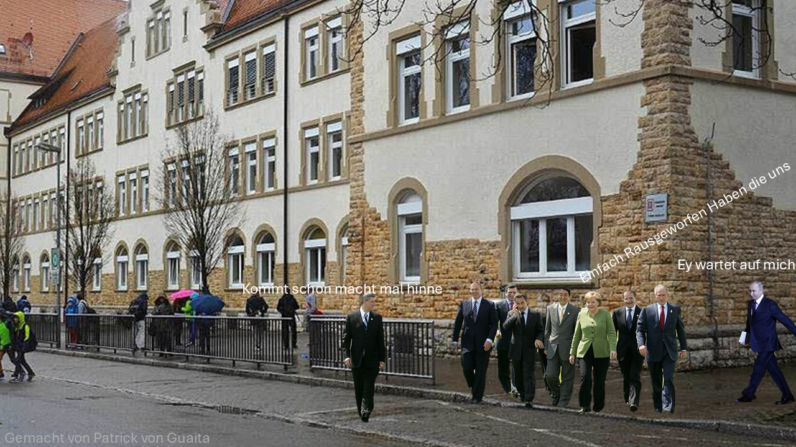

Seit Kurzem kehrt das Markgräfler Gymnasium Müllheim wieder zum neunjährigen Gymnasium zurück. Für viele klingt das wie eine gute Nachricht: mehr Zeit zum Lernen, weniger Druck und wieder Platz für Hobbys - doch die Rückkehr zu G9 bringt nicht nur Entlastung, sondern auch neue, sehr praktische Probleme mit sich. Was G9 bedeutet, ist schnell erklärt: Der Lehrstoff bleibt im Wesentlichen derselbe, wird aber auf ein zusätzliches Schuljahr verteilt. Theoretisch heißten das weniger Wochenstunden, mehr Zeit zum Üben und Raum für Vertiefung. In der Praxis hängt der Gewinn an Entlastung jedoch stark davon ab, wie die Rahmenbedingungen vor Ort aussehen. Am MGM stehen diese Bedingungen derzeit infrage. Ein zentrales Problem ist der Platz. Durch einen zusätzlichen Jahrgang entsteht Bedarf an Klassenräumen und Fachräumen, genau dort, wo das MGM bereits an seine Kapazitätsgrenzen stößt. Ohne zusätzliche Räume und Mittel droht G9 eine Behinderung des Schulalltags zu werden. Ein weiterer Engpass ist das Personal. G9 verändert Lehrpläne und Stundenverteilungen, verlangt mehr Koordination und in der Folge oft zusätzlichen Lehrereinsatz. Genau in dem Moment, in dem diese Mehrbelastung entsteht, gibt es bereits einen spürbaren Lehrermangel. Wenn nicht genügend Lehrkräfte eingestellt werden können, drohen Unterrichtsausfälle oder größere Klassen. Beides würde das Erreichen der erhofften Entlastung für die Schüler durch das zusätzliche Jahr sehr erschweren. Auch die Alltagssituation ändert sich: Unterschiedlicher Unterrichtsstoff, gereihte Stundenpläne und temporäre Umzüge einzelner Klassen beeinflussen die Schulatmosphäre. Solche Störungen machen es schwer, den Gewinn durch das zusätzliche Schuljahr sofort zu spüren. Besonders, wenn Organisationsaufwand den Lernalltag dominiert. Politisch gesehen ist die Entscheidung für G9 eine landesweite Maßnahme. Doch die Folgen tragen die Schulen vor Ort: Raumplanung, Personalgewinnung und die konkrete Umsetzung sind Aufgaben der einzelnen Schulen und Schulträger, oft mit knappen Mitteln. Das zeigt ein generelles Problem vieler bildungspolitischer Entscheidungen: Die Vorgaben werden oben getroffen, die Umsetzung und die Kosten bleiben unten. Ohne eine klare, finanzierte Unterstützung vonseiten des Landes oder der Kommunen wird es schwierig, die Vorteile von G9 tatsächlich zu realisieren. Trotz aller Kritik bleibt G9 jedoch eine Chance. Mit ausreichenden Räumen, genügend Lehrkräften und einer verlässlichen Finanzierung kann das zusätzliche Schuljahr tatsächlich zu mehr Ruhe im Schulalltag beitragen und nachhaltigeres Lernen ermöglichen. Ein geringeres Lerntempo, mehr Wiederholungsphasen und Raum für Projekte könnten Schülern helfen, Schule und Freizeit besser miteinander zu verbinden. „Ich finde G9 ist eine Chance, den Schulalltag zu verbessern, den Schülern mehr Freiheit zu ermöglichen und ihnen mehr Platz für Hobbys und AGs zu geben“ Frau Neugebauer Entscheidend ist daher nicht die Rückkehr zu G9 an sich, sondern die Art und Weise, wie sie umgesetzt wird. Für das Markgräfler Gymnasium stellt sich weniger die Frage, ob G9 sinnvoll ist, sondern unter welchen Bedingungen es gelingen kann. Ohne die notwendigen Investitionen droht das neunte Jahr zu einer bloßen Verlängerung zu werden – mit denselben Problemen wie zuvor. Ob G9 am Ende Entlastung bringt oder nur neue Herausforderungen schafft, wird sich nicht auf dem Papier, sondern im Schulalltag zeigen.
Autor: Jadon Brenneisen
